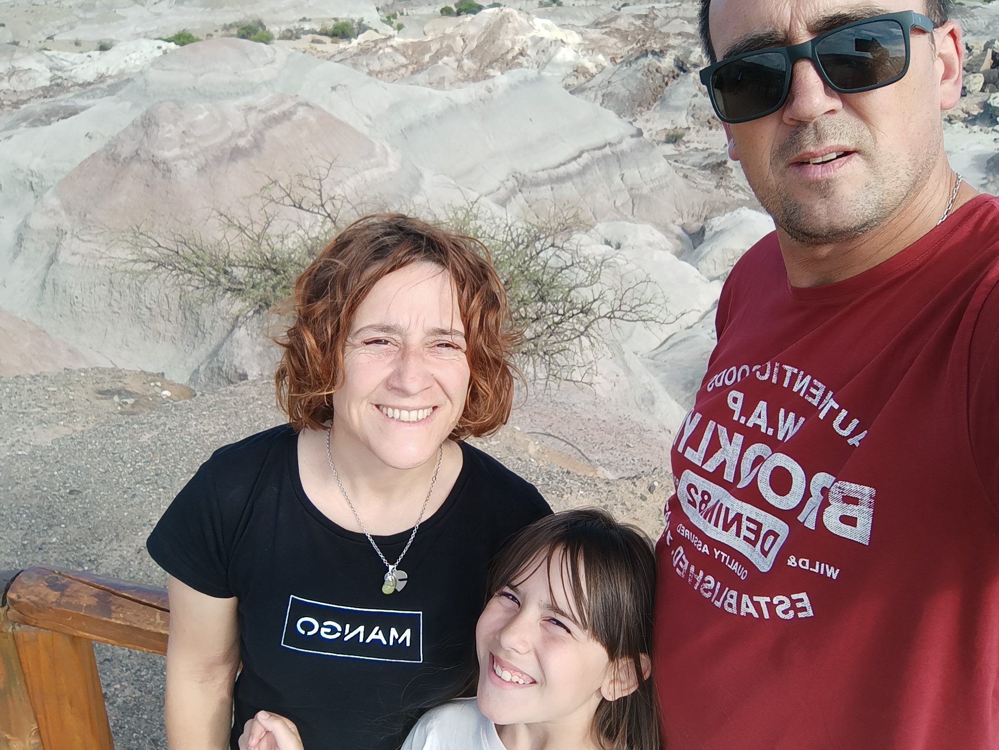

Maria Virginia Rubio | WDD 130
Hi, my name is Maria Virginia, Im 48 years old living in Montevideo, Uruguay. I have a daugther called Albertina and Im married with Alejandro. Our favourite activity together is be at home, travel and participate at Scouts Group. I work at home like as SEO, and in a little growing plants project with my daugther.